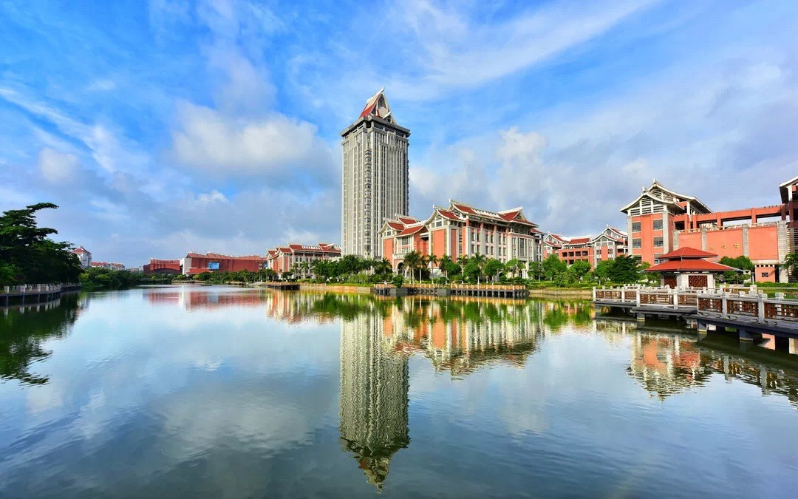

集美大学指导中心简介
集美大学学生就业指导中心是学校学生就业工作的管理机构，全面负责本校全日制研究生和本科学生的就业创业工作。

目前中心在编人员6人。其主要职责是：贯彻国家的就业方针、政策，拟定毕业生就业办法、措施，完善毕业生就业创业服务体系；制定并组织实施学生就业指导规划和计划，开展学生就业、创业指导与咨询；宣传毕业生资源，公布毕业生信息，负责毕业生推荐；开展需求市场调查，了解社会需求状况，发布用人需求信息；建立校企合作关系，完善校内人才市场，组织校园招聘活动；建设就业创业网站，推进网络“双选”等线上就业创业指导服务工作；实施就业管理，主持就业签约，编制就业方案；办理毕业生派遣手续，处理毕业生遗留问题；组织开展毕业生就业状况、就业质量跟踪调查，发布年度就业质量报告；组织对学院就业工作的督促、检查、指导和评估；负责大学生创新创业教育工作，具体做好校内外大学生创新创业实践基地建设、创业导师的遴选聘任和校友创业典型案例的收集和宣传工作等，负责大学生创新创业园建设和日常管理工作，做好入驻项目或团队的遴选、培训指导、考核等工作；完成上级主管部门和学校领导赋予的工作任务。